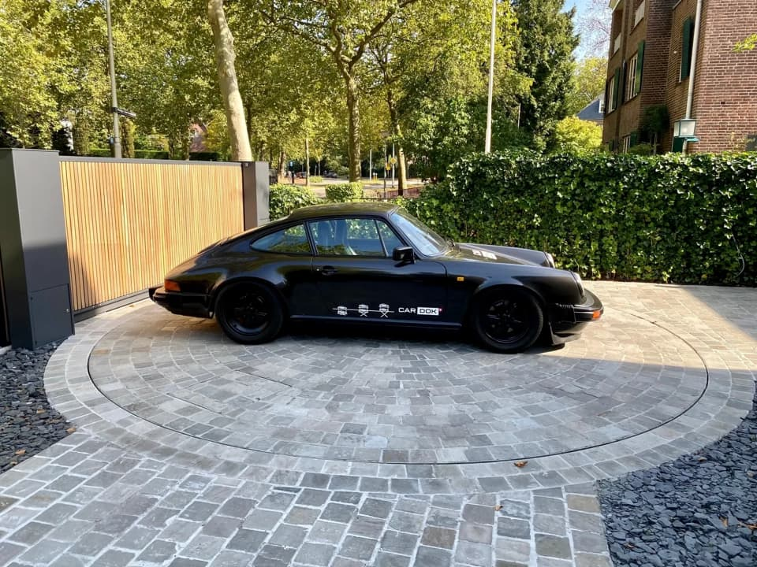
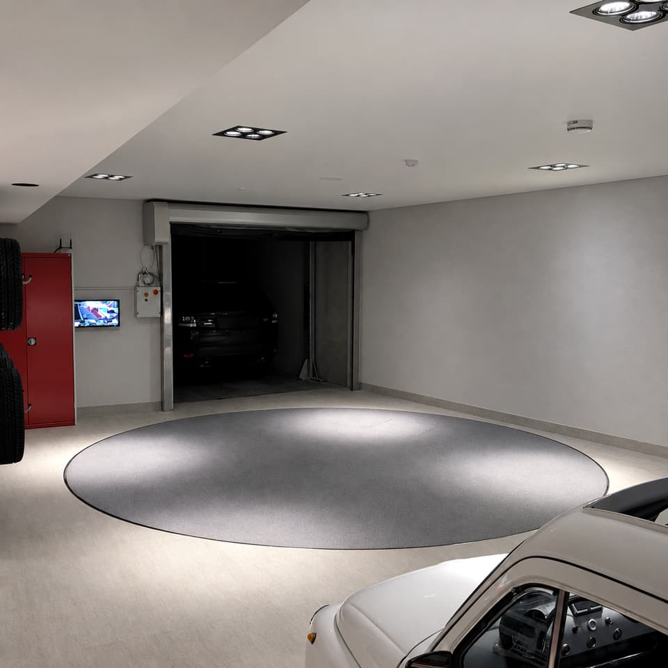
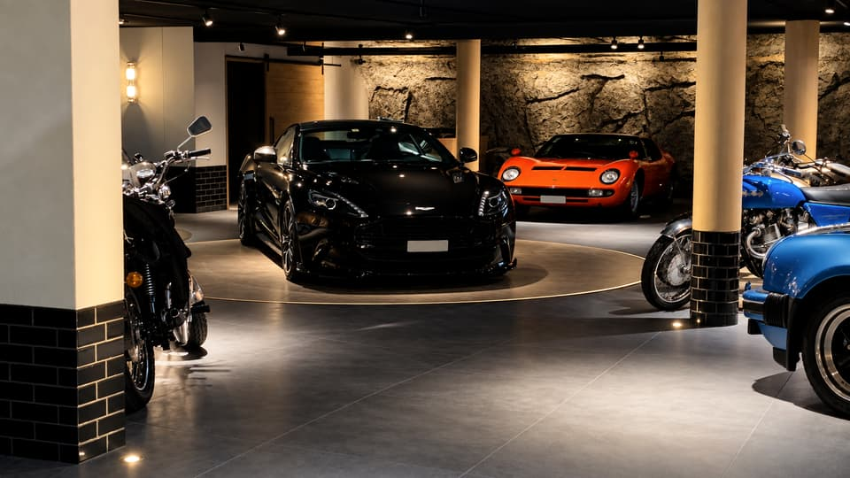
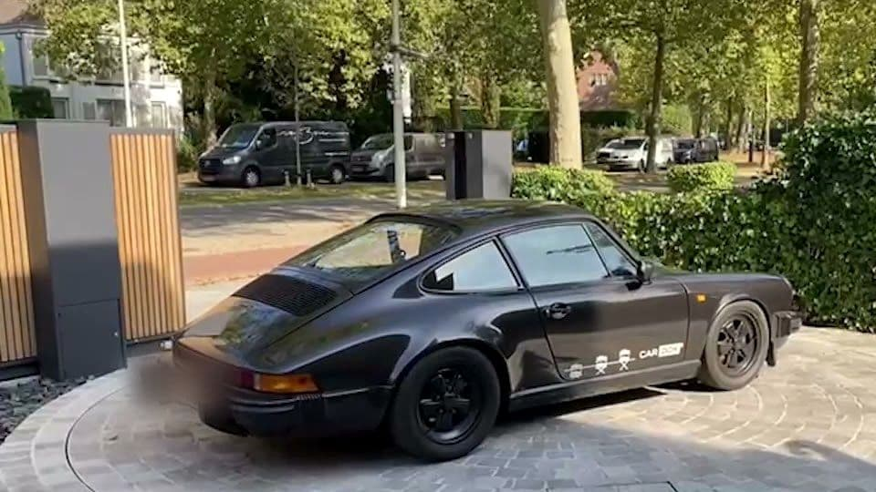

Manœuvres
Manœuvres en toute facilité
Naviguer dans des espaces confinés exige précision et fluidité. La Cardok Turntable introduit une nouvelle dimension de confort, garantissant que même les manœuvres les plus complexes deviennent faciles. Que ce soit dans une allée étroite, un garage compact ou un environnement architecturalement contraint, cette solution discrète mais hautement efficace permet aux véhicules de tourner en douceur, éliminant la nécessité de manœuvres compliquées ou de réglages serrés. Conçue pour une intégration intérieure et extérieure, la plateforme reste discrète tout en améliorant l’accessibilité, transformant l’expérience de stationnement en un moment de facilité et de raffinement absolu.
Intégration
Intégration parfaite, harmonie esthétique
Chaque détail de la Cardok Turntable est conçu avec à la fois la performance et la discrétion à l’esprit. Extension parfaite de son environnement, elle peut être recouverte pour se fondre harmonieusement avec les matériaux existants, garantissant que l’intégrité visuelle de l’espace reste intacte. Que ce soit avec des finitions en pierre, bois ou béton, elle disparaît dans son environnement tout en offrant une solution sophistiquée et hautement pratique. Au-delà de son attrait esthétique, l’ingénierie de précision assure une fiabilité sans égale. Une capacité de charge allant jusqu’à 3 000 kg, combinée à un mécanisme de rotation lisse et contrôlé, garantit à la fois durabilité et fonctionnement sans effort.

La finition
Que ce soit avec des finitions en pierre, bois ou béton, elle disparaît dans son environnement…
- Capacité de charge
- jusqu’à3 000kg


Nos projets
Tous nos projets
La vidéo est lue depuis YouTube.
Témoignage
« Nous avons installé une Turntable dans notre résidence privée et nous ne le regrettons pas ! Garer sa voiture est un jeu d’enfant et cela apporte un luxe supplémentaire à notre garage souterrain. Nous ne pourrions être plus satisfaits ! Merci à Patrick pour son excellent travail. »